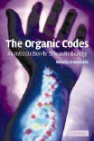

| |
The Organic Codes
Reprinted
with permission from the Introduction of the book “The Organic Codes”
by Marcello Barbieri. Cambridge University Press, 2003.
INTRODUCTION
TO THE ORGANIC CODES
There is a strange
paradox in modern biology. On the one hand, new discoveries are made at such a
high rate that our science of life appears full of surprises and in a constant
state of flux. On the other hand, all new findings are apparently accommodated
within a theoretical framework that remains remarkably stable. Present-day
biology, in other words, seems to be in that phase of development that Thomas
Kuhn referred to as “normal science”, a phase where an endless stream of
novelties is smoothly accounted for by an unchanging paradigm. And this is
definitely not for want of alternatives. No efforts have been spared to provide
different explanations of life, but none has withstood the test of time. What
makes us feel good about our present paradigm (which many call universal
Darwinism) is that only the truth – or something very near the truth – can
resist so many assaults and outlive generations of critics. In such a
situation, I find it almost embarrassing to suggest that our beloved paradigm
is not as perfect as we like to think. But this is the message that is coming
from nature, and I had better tell you straight away the reasons that lead to
this conclusion. The main points are three: the existence of organic codes, a
mathematical model of epigenesis and a new theory of the cell.
The organic codes
From time immemorial it
has been thought that codes, or conventions, exist only in the mutable
world of
culture, while nature is governed by immutable laws. The discovery that a
genetic code is at the very heart of life came therefore as a bolt from the
blue. And people rushed to anaesthetise it. The genetic code was immediately
declared a frozen accident, and the divide between nature and culture
remained substantially intact. The existence of other organic codes is, in
principle, as natural as that of the genetic code, but its implications are
perhaps even more revolutionary. The genetic code appeared on Earth with the
first cells, while the linguistic codes arrived almost 4 billion years later,
with cultural evolution. These are the only codes that modern biology currently
recognises, which is tantamount to saying that in 4 billion years no other code
appeared on our planet. And if codes are relegated to the beginning and to the
end of the history of life, we can safely say that 4 billion years of
biological evolution went on with the sole mechanism of natural selection. In
this book, however, we will see that there are many other organic codes in
nature, and that they appeared not only throughout the history of life but
marked the main steps of that history, the steps which brought about the great
events of macroevolution. But if codes exist, they must have had origins and
histories, and above all they must have had a specific mechanism. Languages
evolved not only by chance mutations of letters in their words but also by
changes in their grammatical rules, and the same would apply to living
organisms. We must conclude, in short, that biological evolution was produced
by two distinct mechanisms: by natural selection and by natural conventions.
From a logical point of view this is a straightforward
conclusion, but unfortunately theory and practice do not always go hand in
hand. The idea of evolution by natural conventions was proposed for the first
time in 1985, in a book of mine entitled The Semantic Theory of Evolution,
but it did not have any significant impact (even if I am pleased to say that in
a private letter Karl Popper called it “revolutionary”). Regrettably,
people do not seem to associate the existence of organic codes with a mechanism
of natural conventions, as if one could exist without the other. Edward Trifonov,
for example, has been campaigning in favour of sequence codes since 1988, and
in 1996 William Calvin wrote a book entitled The Cerebral Code, but
nobody called for anything different from natural selection. And there is a
reason for that. The reason is that the word code has largely been used
in a metaphorical sense, as have so many other words which have been borrowed
by molecular biologists from everyday language. It is imperative, therefore, to
realise that there are organic codes which are not metaphorical but real, and
to this purpose we clearly need to prove their existence. A code is a
correspondence between two independent worlds, and a real organic code requires
molecules that perform two independent recognition processes. These are the
codes’ fingerprints, and it is they that we must look for and bring to light.
In the genetic code these molecules are the transfer RNAs, but we will see that
equivalent adaptors (the word that Francis Crick initially proposed for
the tRNAs) exist in at least two other processes (signal transduction and
splicing) and are expected to turn up in many other cases. And luckily this is
beginning to happen. In the year 2000, for example, Gabius provided evidence for
a sugar code, while Strahl, Allis, Turner and colleagues discovered a histone
code. The more we learn about organic codes, in conclusion, the more they
turn out to be every bit as real as the genetic code. Sooner or later,
therefore, biologists will have to come to terms with the theoretical
implications of this extraordinary experimental fact.
A mathematical model of epigenesis
Embryonic development was defined by Aristotle as an epigenesis,
i.e. as a sequence of one genesis after another, a step-by-step generation of
new structures. Today epigenesis is often referred to as an increase of
complexity, but when we use this expression we should always add an
important qualification. We should say that epigenesis is a convergent
increase of complexity, in the sense that its outcome is neither random nor
unexpected. This is what makes it so radically different from the divergent
increase that takes place in evolution. The distinction between convergent and
divergent phenomena is particularly relevant today that the study of complexity
has become a research field in its own right. Many interesting ways of
obtaining “order out of chaos” have been described and have found
applications in various disciplines, but the expectation that they could apply
to embryonic development has been an illusion. Embryos are not chaotic systems,
and embryonic stages are not phase transitions.
To my knowledge, there is only one mathematical model
which has described how a convergent increase of complexity can actually take
place. I developed this model as a special case of the general problem of
reconstructing structures from projections, a problem which arises in fields as
diverse as radioastronomy, electron microscopy and computerised tomography. The
mathematics of the reconstruction problem has been thoroughly investigated, and
the minimum number of projections required for a complete reconstruction is
prescribed by basic theorems. This allows us to give a precise formulation to a
problem which may seem hopeless at first sight: the problem of reconstructing
structures from incomplete information. We can legitimately say that we
are performing this type of reconstruction when we work with a number of
projections which is at least one order of magnitude less than the theoretical
minimum, i.e. when we use 10% or less of the minimal information. What is
interesting about this strange-looking problem is that a reconstruction from
incomplete information is equivalent, to all practical purposes, to a
convergent increase of complexity, and so it is a mathematical formulation
of the problem of epigenesis (if the starting information is incomplete, the
reconstruction must produce an increase of information and this is equivalent
to an increase of complexity). Even more interesting is that the problem can
actually be solved, as we will see in Chapter 3. And the beauty of the solution
is that its logic can be grasped even without the mathematics (which will
however be provided). The model employs an iterative procedure that performs in
parallel two different reconstructions: one for the structure in question and
one for its reconstruction memory. The key point is that the
memory space turns out to have the surprising ability to provide new specific
information about the examined structure, and such information can be
transferred from the memory space to the structure space with appropriate
codes, or conventions. The conclusion is that a convergent increase of
complexity can be achieved if a reconstruction is performed with memories and
codes. Which means, in biological terms, that epigenesis requires organic
memories and organic codes. We come back, in this way, to the issue of the
organic codes. And the message from mathematics is strong: there is no way that
we are going to understand a phenomenon as large as embryonic development
without organic codes and organic memories.
A new theory of the cell
The extraordinary thing about codes is that they require a
new entity. In addition to energy and information they require meaning.
For centuries, meaning has been regarded as a spiritual or a transcendental
entity, but the very existence of the genetic code proves that it is as natural
as information. And in fact we can define meaning with an operative procedure
just as we do with any other natural entity. Meaning is an object which is
related to another object via a code. The meaning of the word apple,
for example, is the mental object of the fruit which is associated to the
mental object of that word by the code of the English language (needless to say,
the code of another language would associate a different mental object to the
same word). The meaning of a combination of dots and dashes is a letter of the
alphabet, in the Morse code. The meaning of a combination of three nucleotides
is usually an amino acid, in the genetic code (from which it follows that the
meaning of a gene is usually a protein).
We are well aware that it is man who gives meaning to
mental objects – in the realm of the mind he is the codemaker – but this
does not mean that a correspondence between two independent worlds must be the
result of a conscious activity. The only logical necessity is that the codemaker
is an agent which is ontologically different from the objects of the two
worlds, because if it belonged to one of them the two worlds would no longer be
independent. A code, in other words, requires three entities: two independent
worlds and a codemaker which belongs to
a third world (from a philosophical
point of view this is equivalent to the triadic system proposed in semiotics by
Charles Peirce). In the case of the genetic code, the codemaker is the ribonucleoprotein
system of the cell, a system which operates as a true third party between genes
and proteins. This is why I proposed, in 1981, that the cell is not a duality of
genotype and phenotype but a trinity made of genotype, phenotype and ribotype.
And I argued that the ribotype is a cell category that not only has the same
ontological status as genotype and phenotype, but has a logical and a
historical priority over them (hence the title of the paper: “The ribotype
theory on the origin of life”).
The fact that the ribotype is the codemaker of the genetic
code leads necessarily to a change of our traditional view of the cell, but
there is also another reason for this theoretical shift. The definitions of
life which have been proposed in the last 200 years (for a compendium see the
Appendix), have underlined a variety of presumed essential features
(heredity, replication, metabolism, autonomy, homeostasis, autopoiesis etc.),
but none of them has ever mentioned epigenesis as a defining
characteristic of life. The reason of course is that epigenesis has been
associated with embryos, not with cells, and yet even in single cells the
phenotype is always more complex than the genotype. This means that every cell
has the ability to increase its own complexity, and so it really is an
epigenetic system. We realise in this way that the mere presence of organic
codes in every cell, starting from the genetic code, requires a theoretical framework
where organic meaning is a necessary complement of organic information. And
that is precisely what semantic biology is about. It is not a denial of our
Darwinian paradigm. It is a genuine extension of it.
About this book
Chapters 1 and 2 are an introduction to the cell theory
and to the theories of evolution at a level that may be regarded as
undergraduate or thereabouts. Those
who are not concerned with undergraduates
may skip them and start with Chapter 3, but should not forget that
semantic
 biology
applies to all levels of the life sciences and is not just a section for
specialists. Chapter 3 presents a model of epigenesis first in words and then
in formulae, and even the biologists who are not devotees of mathematics can
follow it from beginning to end. This is highly recommended because the idea
that a structure can be reconstructed from incomplete information is still met
with incredulity in our present educational system (if engineers and computer
scientists insist that it can’t be done, just tell them that embryos do it all
the time). Chapter 4 is a biological sequel of Chapter 3 and makes a first
excursion into the world of organic codes and organic memories. This is
instrumental to the next three chapters which are dedicated to the main events
of macroevolution: the origin of life (Chapter 5), the emergence of eukaryotic
cells (Chapter 6) and the Cambrian explosion of animals (Chapter 7). These
chapters allow us to revisit those great transitions and show how different
they look like when organic codes are taken into account. Chapter 8 brings
together the ideas of the previous chapters and presents a first outline of the
framework of semantic biology. And in order to underline the logical structure
of this framework, Chapter 9 makes a brief summary of it in eight propositions
(four principles and four models).
The chapters of this book are arranged in a sequential
order, but they are also largely autonomous and one can read them in any order.
Everything in biology is linked to everything else, and it doesn’t really
matter where one starts from. What does matter is that whichever way we look at
life today we realise that organic codes are there, that they have always been
there, from the very beginning, and that it is about time we start taking
notice.
|